Error-Prone PCR: A Taq PCR reaction containing higher concentrations of C and T, added Mn2+, higher Mg2+ than usual. See http://www.msg.ucsf.edu/agard/Protocols/PCR_Random_Mutagenesis.htm
GeneMorph II Random Mutagenesis Kit (Stratagene): PCR with a special error-prone polymerase. Similar mutation rate to error-prone, but works better for longer templates
XL1 Red (Stratagene): An E. coli strain with high replication error rate. Gives less mutations per KB. Also generates errors such as recombinations, truncations, insertion element transposition
Mutagenic strains: New ideas involves expressing the enzyme involved in affinity maturation for targeted mutagenesis (AID), CRISPR-targeted mutagensesis (EvolvR), or plasmids replicating with an orthogonal mutagenic polymerase.
Nature. 1994 Aug 4;370(6488):389-91. Proc Natl Acad Sci U S A. 1994 Oct 25;91(22):10747-51.
DNA Shuffling is related to error-prone pcr. The experiment starts with a pool of point mutation variants of a gene. These mutants might be the hits identified in a previous round of directed evolution. First, you PCR up the genes with external primers. DNA shuffling. On the left the scheme: parental genes each carrying their own mutations, cut by DNaseI into fragments, reassembled by a primerless PCR into genes that now carry mutations from several parents, then amplified with terminal primers. On the right the same thing as a protocol, six steps from pooling the hits to subcloning.Nature. 1994 Aug 4;370(6488):389-91. Proc Natl Acad Sci U S A. 1994 Oct 25;91(22):10747-51.
Shuffling has largely replaced error-prone pcr because it does double-duty: it not only recombines the mutations contained in a population of genes, it is also error prone itself causing a similar spectrume of point mutations to error-prone PCR. What shuffling itself does to the sequence: a count of every substitution found in 4437 bases of shuffled lacZ, transitions and transversions alike, at a rate of 0.7% and with no frameshifts. Shuffling is error-prone in its own right.
Nat Biotechnol. 2007 Mar;25(3):338-44. Epub 2007 Feb 18.
There are also strategies for combining computational design with directed evolution. ProSAR is one such method developed at Codexis. The first step is to generate an initial library. This can be done by error-prone, shuffling. You can also explicitly synthesize each single-amino acid mutant of a protein using gene synthesis. For a typical 300 amino acid protein, there are only 6000 such variants. As microarray-based gene synthesis becomes more available, this approach will be greatly enabled. You then measure the activity of each variant. In this example, they are doing directed evolution of thermal stability, so they are comparing activity with and without a heat challenge. The first half of ProSAR: build a library, by random mutagenesis or by simply synthesizing every single amino acid substitution, then measure every variant. The chart shows the result for one such experiment — each mutation's effect, before and after a thermal challenge.Nat Biotechnol. 2007 Mar;25(3):338-44. PMID: 17322872
You then write out some equations. You will have one equation for each clone that you assay. The measured fitness for each clone is y. Each X1a-like value is either 1 or 0 for the presence of each possible base substitution. The C1a-like values are the fitness contributions associated with each mutation. These are unknowns that we are trying to measure. If you assume that the contribution of most mtuations is additive, then you can describe the fitness observed for each variant as a linear combination of each mutation. In practice, this additivity is usually true with the exception of mutations in the active site of the protein. After solving the equations for each c value, you do additional design of experiment calculations to choose those mutation combinations that will be most informative to test in combination during the next round of mutagenesis. The second half of ProSAR: one linear equation per assayed clone, with the measured fitness on the left and, on the right, a one-or-zero term for every possible substitution times that substitution's own unknown contribution. Solve for the contributions, then design the next round's combinations from them.